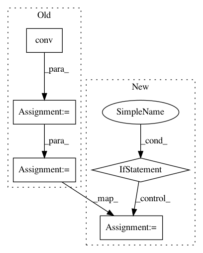

f766c92a63fb67a99744dcb82c8c78406fbf905a,deepchem/models/torch_models/gat.py,GAT,forward,#GAT#Any#,113
Before Change
// convolutional layer
for conv in self.conv_layers:
node_feat = conv(node_feat, edge_index)
// pooling
graph_feat = self.pooling(node_feat, data.batch)
graph_feat = F.leaky_relu(self.fc(graph_feat))
out = self.out(graph_feat)
if self.mode == "regression":
return out
else:
logits = out.view(-1, self.n_tasks, self.n_classes)
// for n_tasks == 1 case
logits = torch.squeeze(logits)
proba = F.softmax(logits, dim=-1)
return proba, logits
After Change
out = self.model(g, node_feats)
if self.mode == "classification":
if self.n_tasks == 1:
logits = out.view(-1, self.n_classes)
softmax_dim = 1
else:
logits = out.view(-1, self.n_tasks, self.n_classes)
softmax_dim = 2
proba = F.softmax(logits, dim=softmax_dim)
return proba, logits
else:
return out
In pattern: SUPERPATTERN
Frequency: 3
Non-data size: 5
Instances
Project Name: deepchem/deepchem
Commit Name: f766c92a63fb67a99744dcb82c8c78406fbf905a
Time: 2020-11-04
Author: mufeili1996@gmail.com
File Name: deepchem/models/torch_models/gat.py
Class Name: GAT
Method Name: forward
Project Name: deepchem/deepchem
Commit Name: 97d7f88df32ae58875d7534c7c517905a3eb1341
Time: 2020-11-05
Author: mufeili1996@gmail.com
File Name: deepchem/models/torch_models/gat.py
Class Name: GAT
Method Name: forward
Project Name: keras-team/autokeras
Commit Name: 6f83515e9ef227c5dae371a3907be283fe8e0d08
Time: 2020-02-20
Author: jhfjhfj1@gmail.com
File Name: autokeras/hypermodels/basic.py
Class Name: ConvBlock
Method Name: build